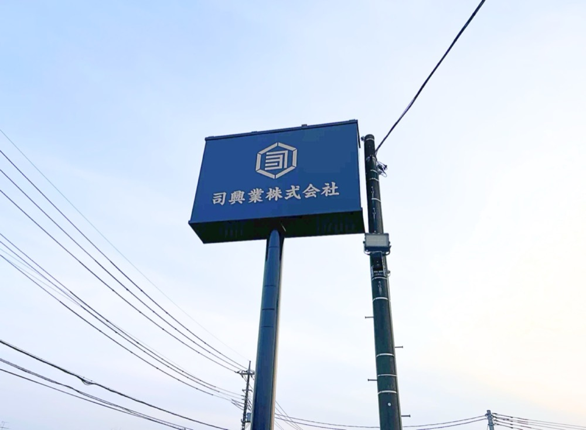
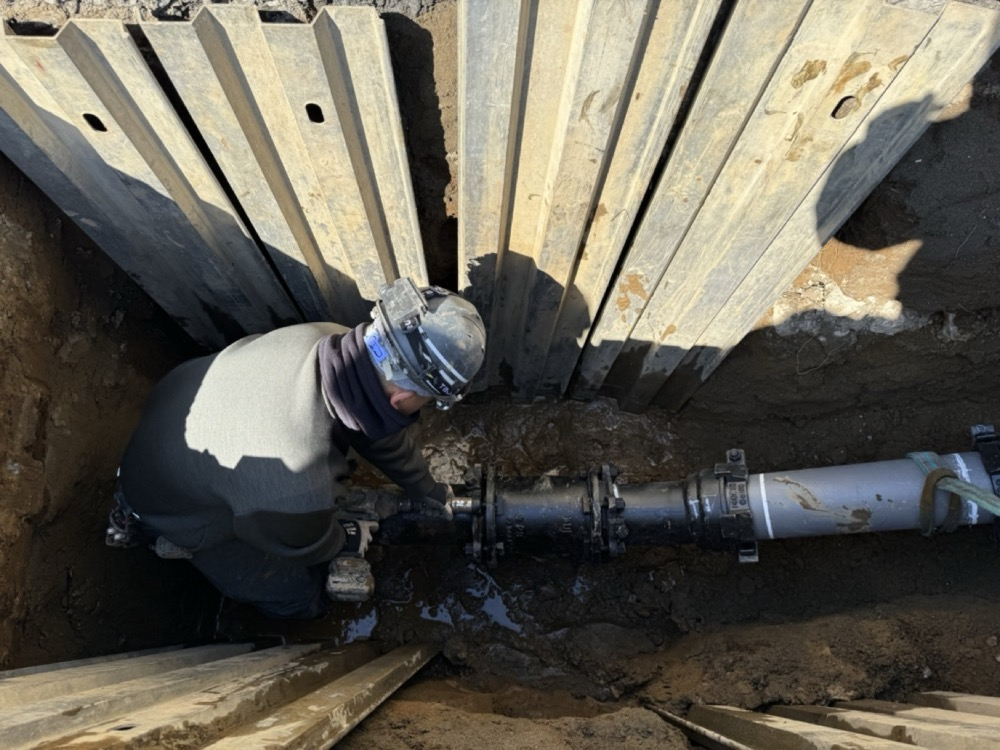
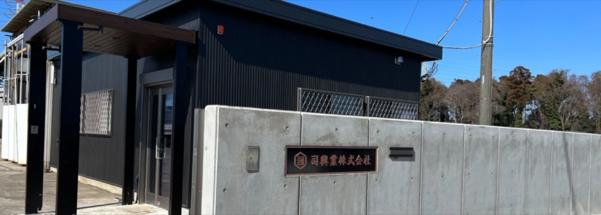

「当たり前」をつくる鎌ケ谷市のプロフェッショナル集団
相澤 翔平Shohei Aizawa
司興業株式会社 代表取締役
高校卒業後、司興業株式会社に入社。2015年、同社代表取締役に就任。
企業サイトを見るTRACK 01
「当たり前」をつくる鎌ケ谷市のプロフェッショナル集団

千葉県鎌ヶ谷市にある司興業株式会社は、千葉県全域の水道整備を中心とした管工事を行っている会社だ。約10名で千葉の水道インフラを支えている、少数精鋭のプロフェッショナルチームである。
代表の相澤氏は語る。「日本の水道普及率は98％です。そして日本の地下には地球18周分以上、約73万㎞の水道管が埋まっています。実はそのうち地球3周分以上の約13万㎞が既に耐用年数を超えている状態で、全ての管路を更新するのに130年以上かかるとも言われています。
でも普通に生活していたら気をつけることもありませんよね。人々の生活を守る水道インフラ工事、蛇口をひねれば水が出るという当たり前を作る仕事を、私たちは誇りに思っています。」
TRACK 02
創業者から渡されたバトンを受け継いだ2代目

すでに20年以上の歴史を持つ司興業株式会社。相澤代表は2代目の代表取締役として会社を運営している。
高校を卒業後、司興業株式会社に就職。仕事に対する真面目で勤勉な姿勢が評価され、次第に当時の創業者の右腕的存在となった。
「ですが入社して10年が過ぎたころ、先代の創業者が亡くなってしまったんです。亡くなる直前、創業者から「会社を頼む」と言われたことがきっかけで2015年に代表取締役に就任しました。就任してからはすべてが大変になってしまいましたが、頼むと言われたからにはそのことば通りこの会社を守らないといけないじゃないですか。当時は自分ともう一人しかいない状況でしたが、必死になっていろんなことに挑戦して、ここまで大きくしてきた自負はあります。そしてこれからもその気持ちは変わらないですね。」と相澤代表はことばを重ねていた。

TRACK 03
司興業が考える「千葉ダントツの機動力・技術力・団結力」とは
昨年1月に新社屋に移転し、新しい地で千葉の水道インフラを支えている司興業株式会社。相澤代表がバトンを受け取ってからの司興業株式会社の勢いは凄まじい。代表に就任してから、現在の売上規模は先代の3倍を記録している。
同業他社とくらべ20代の若手が多く、スピードとガッツはどの会社よりも負けないと相澤代表は語る。また他社に先駆けて、2016年から現場に電子黒板などを導入。常に現場の効率化に励んでいる。
相澤代表は「使ったことがないから対応できない、という従来の慣習を重んじる役所との調整に苦労しましたね…。でもこういった技術を使えば、より効率的に施工が仕上げられるはずです。スピードとガッツ、そして最新技術の活用力で他社に負けない施工を心がけています。」と語った。